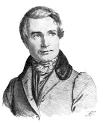

Алексей Васильевич Кольцов родился 15 октября 1809 года, в городе Воронеже, в семье торговца. Его отец, благодаря своей активности и трудолюбию, включался в список самых богатых торговцев этого города. Через 7 лет, после рождения Алексея, семья переехала в центр Воронежа, как и хотела раньше. Почти с десяти лет, маленький Леша помогал отцу и старался учиться, одно закончил всего 2 класса, по воле папы.
Начало творчества
Первые стихи, были написаны Алексеем в 16 лет, в них он описывал настоящих, русских людей, с которыми любил общаться. На следующий год, он взаимно полюбил девушку, крепостную его папы. Однако тот был против этого брака и не разрешил возлюбленным жениться.
В 1831 году, поэт первый раз в жизни побывал в столице России. Посетил Н.В. Станкевича – философа и организатора кружка литературы, с которым ранее познакомился, разъезжая по делам отца. Станкевич познакомил Алексея с писателем Белинским. И у Кольцова появился не только учитель, но и настоящий друг.
Алексей становится знаменитым
Через 4 года после этого, А. Кольцов стал известным, благодаря вышедшей книге стихотворений, несмотря на то, что там было всего около 18-ти произведений. Однако для славы поэта, этого оказалось достаточно. Мечтой Алексея на тот момент было, оставить торговые дела и полностью отдать себя литературе.
Следующий, 1836 год, стал переломным для Кольцова. Он снова уехал в Москву по делам торговли, и тогда, познакомился наилучшими писателями того времени. В Санкт-Петербурге, Алексей знакомится с Пушкиным и Жуковским, они его творчеством! Пушкину безумно понравился стих «Урожай». После этого, произведения Алексея Васильевича публиковали в самых лучших газетах и журналах Москвы и не только.
Возвращение домой было триумфальным! К поэту проявлялся активный интерес, и даже правительство Воронежа заинтересовалось творчеством Алексея.
Смерть поэта
Несколько лет спустя, он не совсем удачно съездил в столицу по торговым делам, и по приезду, сильно поругался со своим папой. Рассерженный отец, обвинял сына в несерьезном отношении к важным делам. Конфликт в семье и постоянные ссоры так и не завершились. В связи с этими событиями, Алексей Кольцов серьезно заболел, а 29 октября 1842 года внезапно скончался с жизнью.
Спустя 4 года, его лучший друг – Белинский, опубликовал посмертный сборник стихотворений Кольцова. Прокомментировав тем, что это было сокровенное желание друга.
Интересные факты
В детстве его практически не обучали, начав образование лишь когда будущему поэту исполнилось 9 лет. Мать Алексея Кольцова была неграмотной, а отец, купец, грамотой хоть и владел, но был человеком крайне строгим и суровым.
За свою жизнь Алексей Кольцов опубликовал лишь один сборник стихотворений. Причём назвал он его очень просто и скромно — «Стихотворения».
Всю жизнь Кольцов конфликтовал с отцом из-за литературы. Тот желал, чтобы сын пошёл по его стопам и стал торговать скотом, но сам Кольцов желал заниматься только литературой.
В юности с ним произошла личная трагедия. Он влюбился в крепостную девушку, принадлежавшую его отцу, но отец продал его возлюбленную.
Своим кумиром Алексей Кольцов считал поэта Ивана Дмитриева. Первые его стихотворения и вовсе являлись подражанием его творчеству, по его собственным словам.
Свой вклад в становление Алексея Кольцова, как поэта, внёс воронежский книготорговец Д. Кашкин. Видя энтузиазм молодого человека, он позволил ему бесплатно пользоваться книгами из своего магазина.
Лучшие произведения
Лес
Косарь
Не шуми ты, рожь
Осень
Песня пахаря

Памятник в Кольцовском сквере. Был открыт 27 октября 1868 года. Инициатором установки выступила родная сестра поэта — А. В. Андронова. Памятник выполнен из белого каррарского мрамора и выполнен в виде изящного бюста на высоком постаменте. На лицевой грани памятника расположена надпись «Алексей Васильевич Кольцов».